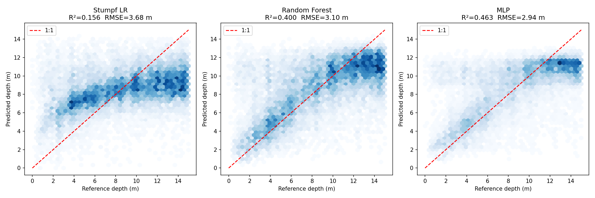

Water depth from Sentinel-2 along the coast of Crete
In clear water, sunlight reaches the sea floor and comes back, and the deeper the water, the less of it returns. I used this to estimate depth from 54 Sentinel-2 scenes of western Crete and compared three models against the EMODnet depth grid, testing each one on parts of the coast it never saw during training.
Depth for every 0–15 m pixel of the scene of 8 July 2024, predicted by the neural network. “Error” is predicted minus EMODnet depth: red means the model predicts too deep, blue too shallow. “Error, test blocks” shows only the blocks the model never saw in training.
The idea
Water absorbs light, and it absorbs green and red faster than blue. Over a bright sandy floor, the deeper the water, the darker the pixel and the more blue it looks compared with green. Lyzenga (1978) turned this into a depth model, and Stumpf et al. (2003) simplified it to a single ratio of the logarithms of blue and green reflectance, which changes roughly linearly with depth and depends less on how bright the sea floor is.
The signal fades with depth. Below a certain depth no light from the floor reaches the sensor, and the pixel looks like open sea. The chart shows where that happens here.
Per-pixel median of ln(green reflectance) over all 54 scenes, averaged per 2 m of EMODnet depth (1.97 million pixels, Spearman ρ = −0.61). The signal flattens below about 18 m, so only 0–15 m is modelled.
Data and method
- Imagery
- Sentinel-2 Level-2A (surface reflectance), tile T34SGE, 54 scenes from February 2024 to November 2025, bands B02 (blue), B03 (green), B04 (red) and B08 (near infrared) at 10 m.
- Reference depth
- EMODnet Digital Bathymetry DTM 2024 (EMODnet Bathymetry Consortium, 2024), cells of about 115 m, put on the 10 m Sentinel-2 grid with nearest-neighbour resampling. Pixels 0–15 m deep are used.
- 1. Water mask
- Only pixels the Sentinel-2 scene classification marks as water (class 6).
- 2. Reflectance
-
Digital numbers to reflectance with the offset of processing baseline 04.00 (ESA, 2022):
ρ = (DN − 1000) / 10000
My first preprocessing missed the offset, so it is corrected when the bands are loaded. - 3. Sun glint
- Half of the near-infrared reflectance is subtracted from the visible bands. This is a fixed-factor version of NIR-based deglinting (Hedley et al., 2005); the full method fits the factor per scene.
- 4. Spatial split
- The coast is cut into blocks of 5 × 5 EMODnet cells (about 500 m). 80 % of the blocks are used for training and 20 % for testing, so test pixels are never next to training pixels (Roberts et al., 2017). 756 training blocks, 189 test blocks; 1 million training and 2 million test pixels drawn from all scenes.
- 5. Stumpf band ratio
-
Linear fit of depth to the log ratio (Stumpf et al., 2003), here without the scaling constant n of the original:
depth = m₀ + m₁ · ln(B02) / ln(B03)
- 6. Random forest
- 100 trees on B02, B03 and B04 (Breiman, 2001), the approach Sagawa et al. (2019) used for multi-temporal satellite bathymetry.
- 7. Neural network
- Multilayer perceptron 3 → 64 → 32 → 16 → 1 with ReLU, standardised inputs and early stopping (scikit-learn; Pedregosa et al., 2011).
- Tools
- Python with rasterio, NumPy and scikit-learn. This page uses Leaflet.
Results
All three models are scored on the same 2 million pixels from the held-out blocks. The neural network is best, the band ratio worst. The random forest gives most weight to the green band (0.47), then red (0.28) and blue (0.25).
| Model | Inputs | R² | RMSE | MAE |
|---|---|---|---|---|
| Stumpf band ratio | ln(B02) / ln(B03) | 0.16 | 3.68 m | 3.02 m |
| Random forest | B02, B03, B04 | 0.40 | 3.10 m | 2.34 m |
| Neural network (MLP) | B02, B03, B04 | 0.46 | 2.94 m | 2.20 m |

Where the errors are
Both models predict too deep in shallow water and too shallow beyond 12 m. Errors are smallest between about 6 and 12 m.
Show the numbers as a table
| Depth | Test pixels | RF bias | RF MAE | MLP bias | MLP MAE | MLP median abs. error |
|---|
What the errors mean
Beyond about 12 m the predictions level off at 11–12 m because the floor is barely visible. Together with the usual pull of a noisy predictor towards the mean, this gives the change of sign in the error.
In the first 3 m the mean error (+3.3 m) is about twice the median (1.7 m). A minority of shallow pixels are predicted far too deep, which points to dark floor such as seagrass or rock, which looks like deep water in a model that only sees colour (Stumpf et al., 2003).
EMODnet itself limits the scores. One EMODnet cell covers about 130 Sentinel-2 pixels with a single depth, so real relief inside a cell counts as error. The DTM 2024 also includes satellite-derived depths in some areas. The numbers measure agreement with another product, not with surveyed depth.
Limits and next steps
One site, one split and one random seed, so there are no confidence intervals and no test on another coast. The models use single-scene pixels; a per-pixel median over all scenes, as in Sagawa et al. (2019), should remove much of the wave and glint noise.
Next steps: spatial cross-validation with several folds, median composites and log-ratio features, and a check against ICESat-2 laser depths (ATL24) instead of a gridded product.
References
- Breiman, L. (2001). Random forests. Machine Learning, 45, 5–32. doi:10.1023/A:1010933404324
- EMODnet Bathymetry Consortium (2024). EMODnet Digital Bathymetry (DTM 2024). doi:10.12770/cf51df64-56f9-4a99-b1aa-36b8d7b743a1
- ESA (2022). Sentinel-2 processing baseline 04.00: radiometric offset of −1000 added to Level-1C and Level-2A products.
- Hedley, J. D., Harborne, A. R., & Mumby, P. J. (2005). Simple and robust removal of sun glint for mapping shallow-water benthos. International Journal of Remote Sensing, 26(10), 2107–2112. doi:10.1080/01431160500034086
- Lyzenga, D. R. (1978). Passive remote sensing techniques for mapping water depth and bottom features. Applied Optics, 17(3), 379–383. doi:10.1364/AO.17.000379
- Pedregosa, F., et al. (2011). Scikit-learn: Machine learning in Python. Journal of Machine Learning Research, 12, 2825–2830.
- Roberts, D. R., et al. (2017). Cross-validation strategies for data with temporal, spatial, hierarchical, or phylogenetic structure. Ecography, 40(8), 913–929. doi:10.1111/ecog.02881
- Sagawa, T., Yamashita, Y., Okumura, T., & Yamanokuchi, T. (2019). Satellite derived bathymetry using machine learning and multi-temporal satellite images. Remote Sensing, 11(10), 1155. doi:10.3390/rs11101155
- Stumpf, R. P., Holderied, K., & Sinclair, M. (2003). Determination of water depth with high-resolution satellite imagery over variable bottom types. Limnology and Oceanography, 48(1, part 2), 547–556. doi:10.4319/lo.2003.48.1_part_2.0547